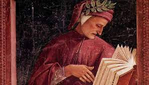
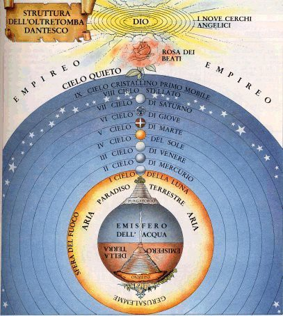
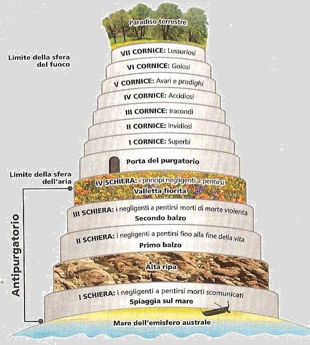
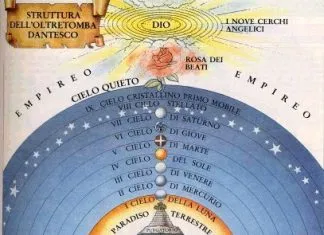

LA DIVINA COMMEDIA
La Divina Commedia è senza dubbio tra le opere più rappresentative della cultura italiana. Scritta da Dante Alighieri, questo poema didattico-allegorico è universalmente considerato come una delle più grandi opere della letteratura di tutti i tempi, nonché una delle più importanti testimonianze della civiltà medievale, tanto da essere nota e studiata in tutto il mondo.
La figura retorica dell’allegoria, cioè la rappresentazione simbolica di un concetto astratto per mezzo di immagini concrete, caratterizza l’intera opera. Il desiderio dell’umanità di purificarsi delle proprie colpe, di liberarsi dal male, per conquistare il bene supremo (concetto astratto) è rappresentato attraverso un viaggio (immagine concreta), che il poeta immagina di compiere nell’aldilà. L’avventura narrata da Dante è simbolicamente l’avventura vissuta da tutta l’umanità.
La Divina Commedia è un’opera scritta in volgare fiorentino, seguendo una struttura in terzine incatenate di endecasillabi (poi chiamate per antonomasia terzine dantesche). E' caratterizzata dal plurilinguismo e dal pluristilismo. Con il primo termine si indica la sua straordinaria varietà lessicale. Dante fa infatti ricorso a termini attinti da tutti i dialetti italiani, nonché ad arcaismi, latinismi, provenzalismi, neologismi.
Con il secondo termine si fa riferimento all’ampiezza dei registri stilistici, che vanno dal più basso e plebeo di certe zone dell’Inferno a quello più sublime del Paradiso. Ma anche all’interno di ogni singola cantica è possibile isolare momenti distinti. Così, non mancano momenti lirici nell’Inferno (basti pensare al canto V di Francesca), né comici nel Paradiso (come l’invettiva di San Pietro nel canto XXVII).
E' caratterizzata dal plurilinguismo e dal pluristilismo. Con il primo termine si indica la sua straordinaria varietà lessicale. Dante fa infatti ricorso a termini attinti da tutti i dialetti italiani, nonché ad arcaismi, latinismi, provenzalismi, neologismi.
Con il secondo termine si fa riferimento all’ampiezza dei registri stilistici, che vanno dal più basso e plebeo di certe zone dell’Inferno a quello più sublime del Paradiso. Ma anche all’interno di ogni singola cantica è possibile isolare momenti distinti. Così, non mancano momenti lirici nell’Inferno (basti pensare al canto V di Francesca), né comici nel Paradiso (come l’invettiva di San Pietro nel canto XXVII).
Il poema rappresenta un viaggio allegorico che il poeta compie attraverso i mondi ultraterreni (Inferno, Purgatorio e Paradiso) 
al fine di ritrovare fede e pace interiore perdute a seguito di uno stato di confusione in una vita votata ai vizi e alla decadenza morale.
"Nel mezzo del cammin di nostra vita" è il primo verso della Divina Commedia di Dante Alighieri e costituisce l'introduzione del primo canto dell'Inferno e, per estensione, dell'intero poema.
Non sappiamo a cosa sia dovuto questo suo stato di confusione: probabilmente la mancanza di Beatrice, l'esilio che l'aveva allontanato dalla sua tanto amata Firenze, le accuse di baratteria che lo allontanarono dalla retta via e lo portarono in una condizione di peccato. Dante è costretto ad elemosinare il suo vivere e sapeva che la letteratura era l'unico modo possibile per sopravvivere nobilmente a tempi di miseria soprattutto morale. Si inventa così Virgilio, la guida che rappresenta la ragione umana, e questo viaggio che l'avvrebbe ricondotto sulla retta via.
Alla base del poema c’è quindi la visione di Dante pessimistica della realtà, essendo fortemente amareggiato dall’esilio e dalla situazione italiana.
Infatti, all’interno degli stessi comuni persistevano le lotte tra guelfi e ghibellini e tra guelfi neri e guelfi bianchi.  C'era quindi assenza di pace nell'Italia centro-settentrionale, la cui causa fu , da parte della Chiesa e dell’Impero, l'aver perso di vista i loro mandati. La Chiesa era troppo rivolta alle cose mondane e cercava con bramosia di impossessarsi del potere temporale senza averne il compito e le capacità. Giungendo a un grado massimo di corruzione, Essa aveva abbandonato il suo scopo, cioè quello di condurre l’umanità verso la felicità ultraterrena.
L’Impero, invece, si era disinteressato della tragica situazione, abbandonando la cura del popolo e preoccupandosi unicamente di ciò che accadeva in Germania. Così aveva dato la possibilità alla Chiesa di impossessarsi del potere che gli apparteneva. Queste due grandi istituzioni avevano quindi portato alla decadenza e provocato una grave confusione coinvolgendo l’umanità. Dante poi vedeva come negativa l’ascesa della borghesia mercantile, che definiva “gente nova” (in senso dispregiativo), a Firenze.
C'era quindi assenza di pace nell'Italia centro-settentrionale, la cui causa fu , da parte della Chiesa e dell’Impero, l'aver perso di vista i loro mandati. La Chiesa era troppo rivolta alle cose mondane e cercava con bramosia di impossessarsi del potere temporale senza averne il compito e le capacità. Giungendo a un grado massimo di corruzione, Essa aveva abbandonato il suo scopo, cioè quello di condurre l’umanità verso la felicità ultraterrena.
L’Impero, invece, si era disinteressato della tragica situazione, abbandonando la cura del popolo e preoccupandosi unicamente di ciò che accadeva in Germania. Così aveva dato la possibilità alla Chiesa di impossessarsi del potere che gli apparteneva. Queste due grandi istituzioni avevano quindi portato alla decadenza e provocato una grave confusione coinvolgendo l’umanità. Dante poi vedeva come negativa l’ascesa della borghesia mercantile, che definiva “gente nova” (in senso dispregiativo), a Firenze.
Dante si sentì, quindi, investito di una missione importantissima, quasi come un prescelto,il cui compito consisteva in un viaggio ultraterreno, attraverso l’Inferno e il Purgatorio per essere ammesso al Paradiso. Dante ritiene di essere caduto nel peccato (la selva oscura) insieme a tutta l’umanità, e di avere una missione profetica.
L'opera presenta tutte le caratteristiche dei grandi poemi del passato, in particolare dell’Iliade, dell’Odissea e dell’Eneide (modello principe).  Dante adotta il metro dei precedenti autori, cioè l’esametro.
Importante è la simbologia numerica persistente nel poema. L’opera infatti si divideva in 3 (numero perfetto perchè rappresenta la trinità) cantiche che a loro volta si dividevano in 33 (multipli di tre, altrettanto perfetti) canti tranne la prima che ne ha 34 poiché il primo canto funge da proemio alle 3 cantiche.
Dante adotta il metro dei precedenti autori, cioè l’esametro.
Importante è la simbologia numerica persistente nel poema. L’opera infatti si divideva in 3 (numero perfetto perchè rappresenta la trinità) cantiche che a loro volta si dividevano in 33 (multipli di tre, altrettanto perfetti) canti tranne la prima che ne ha 34 poiché il primo canto funge da proemio alle 3 cantiche.
Anche l’1(Il Proemio) è simbolo di perfezione poiché rappresenta l’unità divina, visto che Dio è uno e trino. Egli scrive quindi il poema in terzine e utilizza la rima incatenata, che probabilmente riprende dai sonetti. L’opera riscosse, sin da subito, una certa popolarità e contribuì in maniera determinante al processo di consolidamento del dialetto toscano come lingua italiana.
Nella Commedia, Dante racconta un viaggio immaginario attraverso i tre regni ultraterreni, che lo condurranno fino alla visione della Trinità.
Nel Medioevo si considerava la commedia un genere basso ed umile, legato alla comicità, riguardante argomenti leggeri e i cui protagonisti erano dei personaggi del volgo. La parola “commedia”, deriva dal termine latino “comoedia” che significa canto o corteo festoso in onore di una divinità, spesso il dio del vino Dioniso (Bacco a Roma), per il quale venivano celebrati “riti orgiastici”.
La tragedia era contrapposta alla commedia. Dai greci veniva chiamata “tragoedia” e l’origine è sconosciuta. Inizialmente si pensava nascesse dagli antichi cori greci e derivava dal termine “tragos” cioè capro. Riprende questo nome perché i coreuti, coloro che cantavano, indossavano una maschera caprina perché, pare, venisse data in dono a coloro che partecipavano.
Il genere della Commedia venne codificato dai greci e indica ancora oggi un genere divertente, con personaggi comici e un finale lieto. Corrisponde a spettacoli leggeri con stile basso ed umile. La tragedia invece è un componimento molto più elevato e sublime, i cui personaggi non sono umili ma sono principi, regine, re e nobili. Gli argomenti poi sono importanti, il finale è tragico e lo stile è sublime ed elevato.
Secondo gli antichi greci e romani, infatti, ad argomenti elevati e sublimi doveva corrispondere un linguaggio elevato e sublime, così come per gli argomenti bassi ed umili doveva corrispondere uno stile umile e basso.
Dante ritiene la materia del poema importante, anche con tratti drammatici, ma con un lieto fine che riporta quindi alla “Commedia”. L’aggettivo “Divina” fu in seguito attribuito da Boccaccio, nel trattato “In lode di Dante”. Boccaccio la definisce “Divina” per la tematica, poiché tratta del viaggio di Dante che si conclude con la visione di Dio, e anche per la bellezza poetica e l’altezza di significato del poema.
Boccaccio la definisce “Divina” per la tematica, poiché tratta del viaggio di Dante che si conclude con la visione di Dio, e anche per la bellezza poetica e l’altezza di significato del poema.
Nel 1555 verrà pubblicata la prima edizione dell’opera con l’attribuzione del titolo “Divina Commedia”.
L'autore del Decameron ci comunica, sempre nel trattato “In lode di Dante”, che Dante prima dell’esilio avesse già scritto sette canti dell’inferno e in seguito, durante il suo periodo d’esilio, proseguì l’opera. Quest’ipotesi però è poco accreditata e si ritiene invece che il Ghibellin Fuggiasco, inizi a scrivere l’opera dopo l’esilio e che tra il 1307 e 1309 avesse già concluso la prima cantica dell’Inferno. Con certezza si sa che ,con l’ascesa di Enrico VII (1313), avesse sicuramente concluso l’Inferno. Dal 1318 e 1319 conclude il Purgatorio e infine dal 1319 fino al 1321 conclude il Paradiso.
La tematica basilare dell’opera è il viaggio. Il viaggio di Dante scaturisce da una missione di salvezza che, secondo lui, gli derivava da una sua precisa concezione della misericordia divina. Il viaggio, dunque, non viene intrapreso per il suo individualismo, come il viaggio di Ulisse, collocato tra i fraudolenti (cattivi consiglieri) nell’Inferno, che è frutto del suo orgoglio personale e della sua presunzione di soddisfare la voglia di conoscenza e di superiorità rispetto gli altri.
Il canto dedicato ad Ulisse è uno dei più famosi, qui si racconta come l’eroe con una “piccola orazione” ( “fatti non foste per viver come bruti ma per seguire virtute e conoscenza”), convinse i suoi uomini a superare le colonne di Ercole, e spingersi dove nessun altro si era mai spinto, e dove si pensava terminasse il mondo.
Il viaggio di Ulisse, viaggio per eccellenza dell’epoca antica, è compiuto per la sete di conoscenza e indica come l’uomo si differenzia dagli altri esseri per il fortissimo desiderio di conoscere, vedere e apprendere cose nuove.
Un'altro dei modelli più importanti a cui Dante si rivolge è il viaggio di Enea nell’oltretomba (VI Libro dell'Eneide) raccontato da Virgilio.
Anche San Paolo compì un viaggio nell’oltretomba ma, come Dante, lo fece per volere divino. Le fonti e i modelli dell’opera, oltre ai poemi Omerici e al poema di Virgilio, sono le sacre scritture, soprattutto il libro dell’Apocalisse e le lettere di San Paolo, e una serie di opere medievali come il “Tesoretto” di Brunetto Latini, i bestiari (riguardanti creature del regno animale) e i lapidari (riguardanti le pietre preziose).
La Commedia è il racconto fatto in prima persona da Dante autore e relativo a un viaggio – rappresentato come reale – compiuto da Dante personaggio attraverso i tre regni dell’oltretomba dell’Inferno, del Purgatorio e del Paradiso. A trentacinque anni, nella notte del giovedì santo (7 aprile) del 1300, Dante si smarrisce in una selva oscura e selvaggia.
Dopo una notte angosciosa, all’alba del venerdì (8 aprile del 1300) egli vede sul limite della selva un colle illuminato dai raggi del sole; ma quando, lieto, intraprende la salita del colle, è impedito nel cammino da tre fiere, una lonza (la lussuria), un leone (la superbia), e una lupa (l’avidità), che lo spingono indietro. Le tre fiere rappresentano quindi i tre vizi capitali.
Mentre egli indietreggia, vede un’ombra, Virgilio (la ragione umana), che lo esorta a seguire un’altra via per scampare all’orrida selva: il viaggio si svolgerà attraverso i tre regni dell’oltretomba. Virgilio stesso lo guiderà attraverso l’Inferno e il Purgatorio, mentre «un’anima più degna» (Beatrice, la Grazia divina) gli farà da guida nel Paradiso.
Dante accetta con calore l’invito del poeta latino (autore dell’Eneide), suo «maestro». Comincia così il viaggio che Dante compie sotto la guida di Virgilio.
Sulla sommità del Purgatorio, nel Paradiso terrestre, appare Beatrice mentre Virgilio scompare. Da questo punto Beatrice guida Dante attraverso i Cieli fino all’Empireo, sede di Dio. Sarà infine San Bernardo di Chiaravalle ad accompagnarlo alla contemplazione di Dio.
Tale viaggio è un’esperienza individuale, ma riguarda anche ogni cristiano che, come Dante, sia in cerca della salvezza. Questa doppia dimensione, individuale e collettiva, è sottolineata fin dai primi due versi, quando all’aggettivo “nostra” («Nel mezzo del cammin di nostra vita») si passa al pronome di prima persona “io” («mi ritrovai per una selva oscura»).
Nel corso dei numerosi incontri che segnano l’intero viaggio, Dante interviene con energia sui grandi temi che agitano il suo tempo, criticando aspramente la società a lui contemporanea.
Al centro di questa critica stanno innanzitutto le due grandi istituzioni universalistiche, il Papato e l’Impero, entrambe corrotte e colpevoli per aver rinunciato alla propria specifica missione, rispettivamente spirituale e temporale. Tuttavia se la condanna della degenerazione presente è ferma e inappellabile, altrettanto ferma è la fiducia che Dante nutre nella funzione provvidenziale di queste due istituzioni, al di là delle colpe di chi indegnamente le rappresenta.
Ad essere oggetto della condanna del poeta è poi l’intera civiltà comunale, fondata sulla logica del profitto e dominata dall’avidità di ricchezze e di potere.
L’inferno si presenta come una grande voragine a forma di cono il cui vertice si trova al centro della terra,formatosi quando Dio fece precipitare il capo degli angeli ribelli,Lucifero.
L’ingresso dell’inferno è segnato dal fiume Acheronte, sulle rive del quale si trovano le anime di coloro che sono morti nel peccato e qui, in base alla gravità del peccato commesso, si decide la pena che dovrà subire l’anima per l’eternità. Lungo le pareti del cono ci sono dei vasti cerchi sui quali si trovano posto le anime dei dannati.
Il male, cioè il peccato secondo la chiesa cristiana, nasce da tre atteggiamenti:
l’incontinenza (l’abbandonarsi agli istinti naturali senza utilizzare la ragione);
la violenza (contro Dio,contro se stesso e contro il prossimo);
la froda (compiere del male usando l’inganno).
L’inferno risulta diviso in 3 grandi aree suddivise a loro volta da nove cerchi. Lucifero è piantato nel fondo del baratro infernale e con le sue tre bocche maciulla in eterno Giuda (traditore di Gesù e della chiesa), Bruto e Cassio (traditori di Cesare e quindi dell’impero).
Le pene inventate da Dante sono regolate dalla legge del contrappasso.
Dal centro della Terra Dante e Virgilio si arrampicano per uno stretto passaggio fino ad arrivare alla superficie di Gerusalemme dove si trova la montagna del Purgatorio, in cui vengono purificate le anime che hanno commesso peccati di poca importanza prima di raggiungere la perfezione necessaria per accedere al Paradiso.
Per l’ordinamento morale Dante immagina sette gironi in ciascuno delle quali si purifica uno dei sette vizi capitali e dove l’anima deve soggiornare per un tempo proporzionale alla gravità del vizio. Anche il purgatorio ha un ordinamento tripartito: infatti, fissata un’ampia zona al di fuori del purgatorio vero e proprio, l’Antipurgatorio, nella quale sono costretti a soggiornare coloro che si sono pentiti in ritardo, e per questo sono stati “negligenti”, i sette gironi sono suddivisi in tre zone.
Il parametro fondamentale che viene assunto è quello dell’amore verso Dio, e gli spiriti penitenti sono collocati a seconda del vizio che ha reso imperfetto il loro amore.
In cima al monte del purgatorio è collocato il Paradiso: lì Dante viene lasciato da Virgilio e incontra Beatrice.
Beatrice condurrà Dante attraverso i 9 cieli che circondano la Terra. Alla base del Paradiso c’è una grande invenzione di Dante: le anime dei beati si trovavano nello stesso posto (nell’Empireo) e non sono divisi come nell’Inferno e nel Purgatorio.
Dante immagina quindi che le anime scendano a incontrare il poeta nel cielo che per sua virtù meglio rappresenta il carattere della loro vita terrena. Cosi Dante riesce a stabilire ancora una volta una tripartizione dei cieli e delle anime, in base alla distribuzione tra coloro che si sono guadagnati il Paradiso grazie alle virtù proprie della vita mondana, della vita attiva e della vita contemplativa.
Questa struttura ricalca la concezione astronomica dei tempi di Dante, secondo la quale la Terra si trova immobile al centro dell’universo. 
Attorno a essa si estende l’atmosfera terrestre limitata dalla sfera del fuoco, che segna il confine tra la parte “corruttibile” dell’universo, nella quale esiste la morte, le perturbazioni atmosferiche, ecc. Al di sopra della sfera del fuoco tutto è eterno,immutabile,non soggetto a perturbazioni; si tratta delle nove sfere celesti che ruotando producono un suono armonioso.
Al di sopra delle sfere celesti si trova l’Empireo, il cielo in cui si presentano i beati in forma di un vastissimo fiore con al centro le tre persone divine, Padre, Figlio e Spirito Santo, circondate da cori angelici.